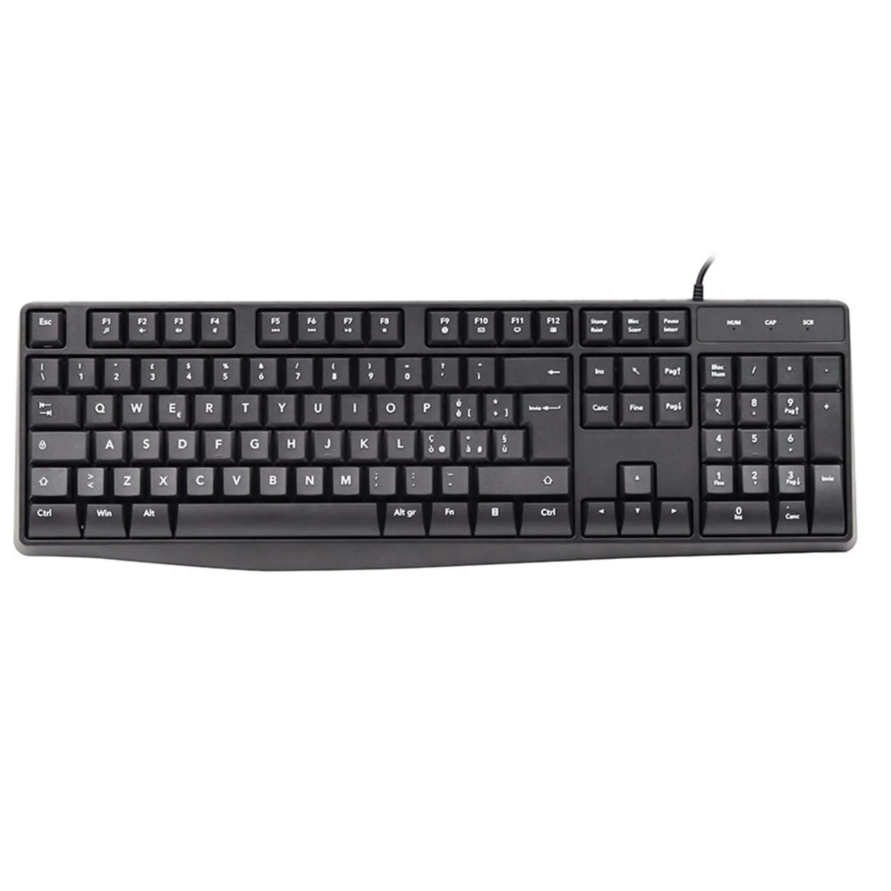

La tastiera è una periferica di ingresso del computer.Permette di inserire lettere, numeri, simboli e comandi attraverso la pressione dei tasti.
Durante la scrittura, la barra spaziatrice inserisce uno spazio, Invio permette di andare a capo e Backspace cancella il carattere prima del cursore. Le frecce permettono di spostare il cursore nel testo.
Possiamo selezionare una casella di testo con il mouse e poi scrivere utilizzando la tastiera.Il testo inserito viene visualizzato sul monitor.